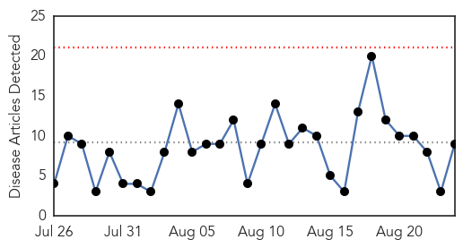
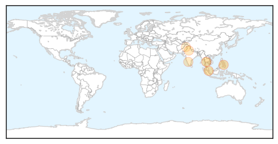

30 Day Trends
Web: 0 alerts, 0 warnings
Twitter: 3 alerts, 0 warnings
Top Articles:
- 0.987
- General public warned of a resurgence of dengue fever
- 0.975
- Region, The Freeman Sections, The Freeman
- 0.970
- Noida sees spurt in dengue cases, government aware of only 11
- 0.960
- Singapore General Hospital, 60 Degrees Pharmaceuticals advance dengue fever clinical trials
- 0.915
- Govt health centres to get 7,300 nurses soon
- 0.748
- City activists slam TMC for not ensuring better hygiene in city, neglecting waste management
- 0.733
- 1,100 Dengue cases in Karnataka in last 30 days : Mail Today, News
- 0.730
- Dengue: 477 cases reported in August
- 0.569
- Pindi police line up against dengue
Top Tweets:
-
No tweets found for Aug 24, 2015
Web/News Articles
Tweets

Article Locations
Article Confidences